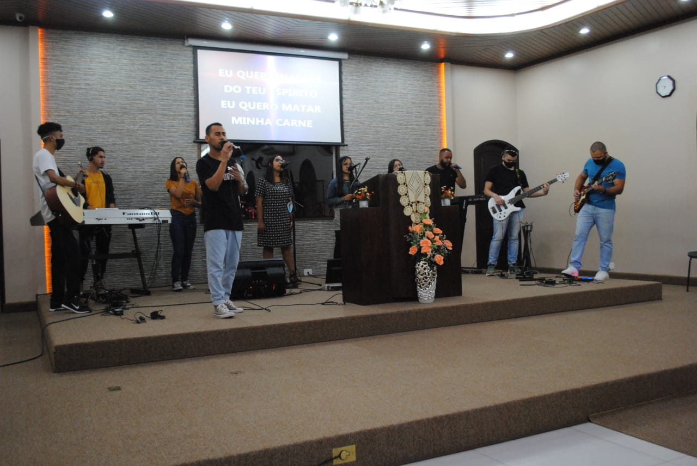

Jubrac Guanabara
"A Jubrac Jd. Guanabara constitui o nosso
grupo de jovens regido pelo líder Presbítero Luciano,
onde buscamos interagir com a juventude e
desenvolver a característica de Cristo em cada um
deles.
A verdadeira característica de um 'Jubraquiano' é fazer a Diferença
na sociedade, pregando o evangelho e desenvolvendo o amor em Deus.
Venha fazer parte desse time!"
Cultos

Sábado: 18h30
Devido a pandemia, nosso culto com a Jubrac acontece todo 1 sábado do mês, seguindo as indicações da OMS e obedecendo o distanciamento social.